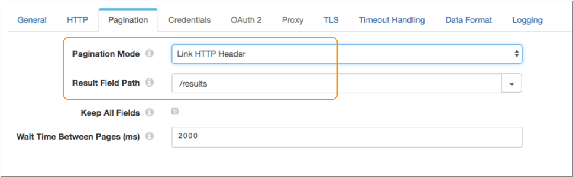
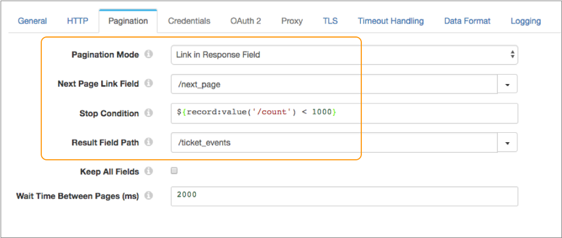
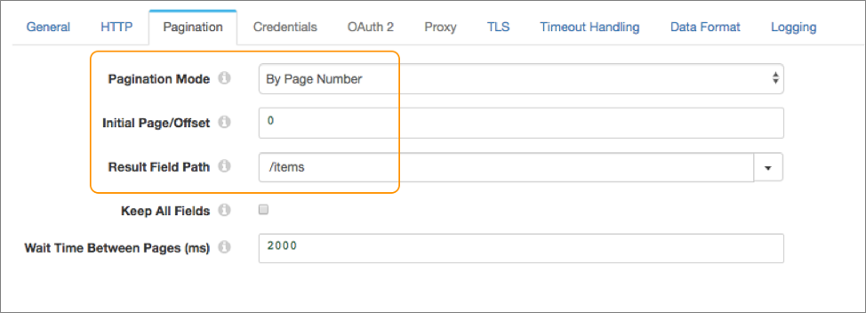
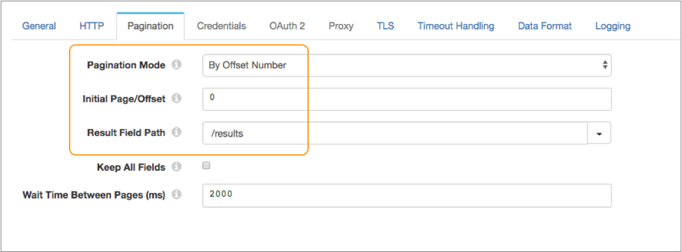
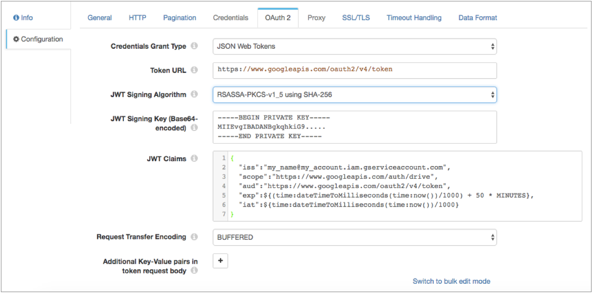

HTTP Client
Supported pipeline types:
|
When you configure HTTP Client, you specify the resource URL, optional headers, and the method to use. For some methods, you can specify the request body and default content type.
You can configure the actions to take based on the response status and configure pagination properties to enable processing large volumes of data from paginated APIs. You can also enable the origin to read compressed and archived files.
The origin provides response header fields as record header attributes so you can use the information in the pipeline when needed.
The origin also provides several different authentication types to access data. You can enter credentials in the origin or you can secure the credentials in runtime resource files and reference the files in the origin. You can also configure the origin to use the OAuth 2 protocol to connect to an HTTP service.
When the pipeline stops, HTTP Client notes where it stops reading. When the pipeline starts again, HTTP Client continues processing from where it stopped by default. You can reset the origin to process all requested files.
Processing Mode
- Streaming
- HTTP Client maintains a connection and processes data as it becomes available. Use to process streaming data in real time.
- Polling
- HTTP Client polls the server at the specified interval for available data. Use to access data periodically, such as metrics and events at a REST endpoint.
- Batch
- HTTP Client processes all available data and then stops the pipeline. Use to process data as needed.
 Not valid in Data Collector Edge pipelines. Do not use Batch processing mode in Data Collector Edge
pipelines.
Not valid in Data Collector Edge pipelines. Do not use Batch processing mode in Data Collector Edge
pipelines.
Actions for Response Statuses
By default, the HTTP Client origin processes only responses that include a 2xx success status code. When the response includes any other status code, such as a 4xx or 5xx status code, the origin generates an error and handles the record based on the error record handling configured for the stage.
You can configure the origin to perform one of several actions when it encounters an unsuccessful status code, that is any non-2xx status code.
- Retry with linear backoff
- Retry with exponential backoff
- Retry immediately
- Cause the stage to fail and stop the pipeline
When defining the retry with linear or exponential backoff action, you also specify the backoff interval to wait in milliseconds. When defining any of the retry actions, you specify the maximum number of retries. If the stage receives a 2xx status code during a retry, then it processes the response. If the stage doesn't receive a 2xx status code after the maximum number of retries, then the stage generates an error.
You can add multiple status codes and configure a specific action for each code.
You can also configure the stage to generate records for all unsuccessful statuses that are not added to the Per-Status Actions list. You then specify the output field name that stores the error response body for those records.
For example, if the stage receives a 400 status code, you
want the pipeline to process the response body that contains the description of the
error. When configuring the stage, you do not add an action for the 400 status code
because you don't need the stage to retry the request. You select the Records for
Remaining Statuses property and then use the default value outErrorBody
as the name of the error response body field.
Pagination
The HTTP Client origin can use pagination to retrieve a large volume of data from a paginated API.
 Not valid in Data Collector Edge pipelines. In Data Collector Edge pipelines, the HTTP Client origin ignores pagination properties.
Not valid in Data Collector Edge pipelines. In Data Collector Edge pipelines, the HTTP Client origin ignores pagination properties.
When configuring the HTTP Client origin to use pagination, use the pagination type supported by the API of the HTTP client. You will likely need to consult the documentation for the origin system API to determine the pagination type to use and the properties to set.
The HTTP Client origin supports the following common pagination types:
- Link in HTTP Header
- After processing the current page, uses the link in the HTTP header to access
the next page. The link in the header can be an absolute URL or a URL relative
to the resource URL configured for the stage. For example, let's say you
configure the following resource URL for the
stage:
https://myapp.com/api/objects?page=1 - Link in Response Field
- After processing the current page, uses the link in a field in the response body
to access the next page. The link in the response field can be an absolute URL
or a URL relative to the resource URL configured for the stage. For example,
let's say you configure the following resource URL for the
stage:
http://myapp.com/api/tickets.json?start_time=138301982 - By Page Number
- Begins processing with the specified initial page, and then requests the
following page. Use the
${startAt}variable in the resource URL as the value of the page number to request. - By Offset Number
- Begins processing with the specified initial offset, and then requests the
following offset. Use the
${startAt}variable in the resource URL as the value of the offset number to request.
For the link in response field pagination type, you must define a stop condition that determines when there are no more pages to process. For all other pagination types, the stage stops reading when it returns a page that does not contain any more records.
When you use any pagination type, you must specify a result field path and can choose whether to include all other fields in the record.
Page or Offset Number
When using page number or offset number pagination, the API of the HTTP client typically requires that you include a page or offset parameter at the end of the resource URL. The parameter determines the next page or offset of data to request.
The name of the parameter used by the API varies. For example, it
might be offset, page, start, or
since. Consult the documentation for the origin system API to
determine the name of the page or offset parameter.
The HTTP Client origin provides a ${startAt} variable that you can use
in the URL as the value of the page or offset. For example, your resource URL might be
any of the following:
http://webservice/object?limit=15&offset=${startAt}https://myapp.com/product?limit=5&since=${startAt}https://myotherapp.com/api/v1/products?page=${startAt}
When the pipeline starts, the HTTP Client stage uses the value
of the Initial Page/Offset property as the
${startAt} variable value. After the stage reads a page of results,
the stage increments the ${startAt} variable by one if using page
number pagination or by the number of records read from the page if using offset number
pagination.
https://myapp.com/product?limit=5&since=${startAt}https://myapp.com/product?limit=5&since=0${startAt} variable by 5, such that the next resource URL is
resolved to:https://myapp.com/product?limit=5&since=5The second page of results also includes 5 items, starting at the 5th item.
Result Field Path
When using any pagination type, you must specify the result field path. The result field path is the location in the response that contains the data that you want to process.
The result field path must be a list or array. The origin creates a record for each object in the array.
{
"count":"1023",
"startAt":"2",
"maxResults":"2",
"total":"6",
"results":[
{
"firstName":"Joe",
"lastName":"Smith",
"phone":"555-555-5555"
},
{
"firstName":"Jimmy",
"lastName":"Smott",
"phone":"333-333-3333"
},
{
"firstName":"Joanne",
"lastName":"Smythe",
"phone":"777-777-7777"
}
]
}{
"firstName":"Joe",
"lastName":"Smith",
"phone":"555-555-5555"
}{
"firstName":"Jimmy",
"lastName":"Smott",
"phone":"333-333-3333"
}{
"firstName":"Joanne",
"lastName":"Smythe",
"phone":"777-777-7777"
}Keep All Fields
When using any pagination type, you can configure the origin to keep all fields in addition to those in the specified result field path. The resulting record includes all fields in the original structure and the result field path that includes one set of data.
By default, the origin returns only the data within the specified result field path.
For example, say we use the same sample data as above, with /results for the result field path. And we configure the origin to keep all fields. The origin generates three records that keep the existing record structure, and includes one set of data in the /results field.
{
"count":"1023",
"startAt":"2",
"maxResults":"2",
"total":"6",
"results":{
"firstName":"Joe",
"lastName":"Smith",
"phone":"555-555-5555"
}
}The second record:
{
"count":"1023",
"startAt":"2",
"maxResults":"2",
"total":"6",
"results":{
"firstName":"Jimmy",
"lastName":"Smott",
"phone":"333-333-3333"
}
}{
"count":"1023",
"startAt":"2",
"maxResults":"2",
"total":"6",
"results":{
"firstName":"Joanne",
"lastName":"Smythe",
"phone":"777-777-7777"
}
}Pagination Examples
Let's look at some examples of how you might configure the supported pagination types.
Example for Link in HTTP Header
link:<https://myapp.com/api/objects?page=2>; rel="next",
<https://myapp.com/api/objects?page=9>; rel="last"So after the HTTP Client origin reads the first page of results, it can use the next link in the HTTP header to read the next page.
https://myapp.com/api/objects?page=1{
"total":"2000",
"limit":"10",
"results":[
{
"firstName":"Joe",
"lastName":"Smith"
},
...
{
"firstName":"Joanne",
"lastName":"Smythe"
}
]
}On the Pagination tab of the stage, you simply set
Pagination Mode to link in HTTP header, and then you set the
result field path to the /results field:

Example for Link in Response Field
The API of the HTTP client uses a field in the response body to access the next page. It requires that you include a timestamp in the resource URL indicating which items you want to start reading.
http://myapp.com/api/tickets.json?start_time=138301982{
"ticket_events":[
{
"ticket_id":27,
"timestamp":138561439,
"via":"Email"
},
...
{
"ticket_id":30,
"timestamp":138561445,
"via":"Phone"
}
]
"next_page":"http://myapp.com/api/tickets.json?start_time=1389078385",
"count":1000,
"end_time":1389078385
}On the Pagination tab of the stage, you set Pagination
Mode to link in response field, and set the next page link field to the
/next_page field.
${record:value('/count') < 1000}Then you set the result field path to the /ticket_events field:

Example for Page Number
The API of the HTTP client uses page number pagination. It requires that you include a page parameter in the URL that specifies the page number to return from the results.
${startAt}
variable:https://myotherapp.com/api/v1/products?page=${startAt}{
"total":"2000",
"items":[
{
"item":"pencil",
"cost":"2.00"
},
...
{
"item":"eraser",
"cost":"1.10"
}
]
}On the Pagination tab of the stage, you set Pagination
Mode to by page number. You want to begin processing from the first page
in the results, so you set the initial page to 0. Then you set the result field path to
the /items field:

Example for Offset Number
limit- Specifies the number of results per page.offset- Specifies the offset value.
${startAt}
variable:https://myapp.com/product?limit=10&offset=${startAt}{
"total":"2000",
"limit":"10",
"results":[
{
"firstName":"Joe",
"lastName":"Smith"
},
...
{
"firstName":"Joanne",
"lastName":"Smythe"
}
]
}On the Pagination tab of the stage, you set Pagination
Mode to by offset number. You want to begin processing from the first
item in the results, so you set the initial offset to 0. Then you set the result field
path to the /results field:

HTTP Method
To request data from an HTTP resource URL, specify the request method to use. Most servers require a GET request, but you should verify the request required by the server you want to access.
- GET
- PUT
- POST
- DELETE
- HEAD
OAuth 2 Authorization
The HTTP Client origin can use the OAuth 2 protocol to connect to an HTTP service.
 Not valid in Data Collector Edge pipelines. In Data Collector Edge pipelines, the HTTP Client origin ignores OAuth 2 properties.
Not valid in Data Collector Edge pipelines. In Data Collector Edge pipelines, the HTTP Client origin ignores OAuth 2 properties.
The origin can use the OAuth 2 protocol to connect to an HTTP service that uses basic, digest, or universal authentication, OAuth 2 client credentials, OAuth 2 username and password, or OAuth 2 JSON Web Tokens (JWT).
The OAuth 2 protocol authorizes third-party access to HTTP service resources without sharing credentials. The HTTP Client origin uses credentials to request an access token from the service. The service returns the token to the origin, and then the origin includes the token in a header in each request to the resource URL.
- Client credentials grant
-
HTTP Client sends its own credentials - the client ID and client secret or the basic, digest, or universal authentication credentials - to the HTTP service. For example, use the client credentials grant to process data from the Twitter API or from the Microsoft Azure Active Directory (Azure AD) API.
For more information about the client credentials grant, see https://tools.ietf.org/html/rfc6749#section-4.4.
- Resource owner password credentials grant
-
HTTP Client sends the credentials for the resource owner - the resource owner username and password - to the HTTP service. Or, you can use this grant type to migrate existing clients using basic, digest, or universal authentication to OAuth 2 by converting the stored credentials to an access token.
For example, use this grant to process data from the Getty Images API. For more information about using OAuth 2 to connect to the Getty Images API, see http://developers.gettyimages.com/api/docs/v3/oauth2.html.
For more information about the resource owner password credentials grant, see https://tools.ietf.org/html/rfc6749#section-4.3.
- JSON Web Tokens (JWT)
-
HTTP Client sends a JSON-based security token encoding to the HTTP service. For example, use JSON Web Tokens to process data from the Google API.
Let’s look at some examples of how to configure authentication and OAuth 2 authorization to process data from Twitter, Microsoft Azure AD, and Google APIs.
Example for Twitter
To use OAuth 2 authorization to read from Twitter, configure HTTP Client to use basic authentication and the client credentials grant.
For more information about configuring OAuth 2 authorization for Twitter, see https://developer.twitter.com/en/docs/authentication/oauth-2-0/application-only.
The following image shows the OAuth 2 tab configured for Twitter:

Example for Microsoft Azure AD
To use OAuth 2 authorization to read from Microsoft Azure AD, configure HTTP Client to use no authentication and the client credentials grant.
The following image shows the OAuth 2 tab configured for Microsoft Azure AD version 1.0:

Example for Google
To use OAuth 2 authorization to read from Google service accounts, configure HTTP Client to use no authentication and the JSON Web Tokens grant.
For more information about Google service accounts, see the Google Cloud documentation: Understanding service accounts.
For more information about configuring OAuth 2 authorization for Google, see the Google Identity Platform documentation: Using OAuth 2.0 to Access Google APIs.

Logging Request and Response Data
The HTTP Client origin can log request and response data to the Data Collector log.
When enabling logging, you configure the following properties:
- Verbosity
-
The type of data to include in logged messages:
- Headers_Only - Includes request and response headers.
- Payload_Text - Includes request and response headers as well as any text payloads.
- Payload_Any - Includes request and response headers and the payload, regardless of type.
- Log Level
- The level of messages to include in the Data Collector log. When you select a level, higher level messages are also logged. That is, if you select the Warning log level, then Severe and Warning messages are written to the Data Collector log.
- Max entity size
-
The maximum size of message data to write to the log. Use to limit the volume of data written to the Data Collector log for any single message.
Generated Records
The HTTP Client origin generates records based on the responses it receives.
Data in the response body is parsed based on the selected data format. For HEAD responses, when the response body contains no data, the origin creates an empty record. Information returned from the HEAD appears in record header attributes. For all other methods, when the response body contains no data, no records are created.
In generated records, all standard response header fields, such as Content-Encoding and Content-Type, are written to corresponding record header attributes. Custom response header fields are also written to record header attributes. Record header attribute names match the original response header names.
When you configure the origin to generate records for unsuccessful statuses that are not added to the Per-Status Actions list, then the record might also include a field that contains the error response body.
Data Formats
The HTTP Client origin processes data differently based on the data format.
 In Data Collector Edge pipelines,
the origin supports only the Binary, Delimited, JSON, SDC Record, and Text data
formats.
In Data Collector Edge pipelines,
the origin supports only the Binary, Delimited, JSON, SDC Record, and Text data
formats.
The HTTP Client origin processes data formats as follows:
- Avro
- Generates a record for every message. Includes a
precisionandscalefield attribute for each Decimal field. - Binary
- Generates a record with a single byte array field at the root of the record.
- Datagram
- Generates a record for every message. The origin can process collectd messages, NetFlow 5 and NetFlow 9 messages, and the following types of syslog messages:
- Delimited
- Generates a record for each delimited line. You can use the
following delimited format types:
- Default CSV - File that includes comma-separated values. Ignores empty lines in the file.
- RFC4180 CSV - Comma-separated file that strictly follows RFC4180 guidelines.
- MS Excel CSV - Microsoft Excel comma-separated file.
- MySQL CSV - MySQL comma-separated file.
- Tab-Separated Values - File that includes tab-separated values.
- PostgreSQL CSV - PostgreSQL comma-separated file.
- PostgreSQL Text - PostgreSQL text file.
- Custom - File that uses user-defined delimiter, escape, and quote characters.
- Multi Character Delimited - File that uses multiple user-defined characters to delimit fields and lines, and single user-defined escape and quote characters.
- JSON
- Generates a record for each JSON object. You can process JSON files that include multiple JSON objects or a single JSON array.
- Log
- Generates a record for every log line.
- Protobuf
- Generates a record for every protobuf message. By default, the origin assumes messages contain multiple protobuf messages.
- SDC Record
- Generates a record for every record. Use to process records generated by a Data Collector pipeline using the SDC Record data format.
- Text
- Generates a record for each line of text.
- XML
- Generates records based on a user-defined delimiter element. Use an XML element directly under the root element or define a simplified XPath expression. If you do not define a delimiter element, the origin treats the XML file as a single record.
Configuring an HTTP Client Origin
Configure an HTTP Client origin to read data from an HTTP resource URL.
-
On the HTTP tab, configure the following properties:
HTTP Property Description Resource URL URL where the data resides. When using page or offset number pagination, use the
${startAt}variable in the resource URL as the value of the page or offset to request.Mode Processing mode: - Streaming - Maintains a connection and processes data as it becomes available.
- Polling - Connects periodically to check for data.
- Batch - Processes all available data, and then stops
the pipeline. Not valid in Data Collector Edge pipelines. Do not use Batch processing mode in Data Collector Edge pipelines.
Polling Interval (ms) Milliseconds to wait before checking for new data. Used in the polling mode only. HTTP Method HTTP method to use to request data from the server. Request Body Request data to use with the specified method. Available for the PUT, POST, and DELETE methods. You can use time functions and datetime variables, such as ${YYYY()}, in the request body.
Default Request Content Type Content-Type header to include in the request. Used only when the Content-Type header is not present. Available for the PUT, POST, and DELETE methods.
Default is application/json.
Authentication Type Determines the authentication type used to connect to the server: - None - Performs no authentication.
- Basic - Uses basic authentication. Requires a username and password.
Use with HTTPS to avoid passing unencrypted credentials.
- Digest - Uses digest authentication. Requires a username and password.
- Universal - Makes an anonymous connection, then provides authentication
credentials upon receiving a 401 status and a WWW-Authenticate header request.
Requires a username and password associated with basic or digest authentication.
Use only with servers that respond to this workflow.
- OAuth - Uses OAuth 1.0 authentication. Requires OAuth credentials.
Use OAuth 2 Enables using OAuth 2 authorization to request access tokens. You can use OAuth 2 authorization with none, basic, digest, or universal authentication.
 Not valid in Data Collector Edge pipelines. In Data Collector Edge pipelines, HTTP
Client ignores OAuth 2 properties.
Not valid in Data Collector Edge pipelines. In Data Collector Edge pipelines, HTTP
Client ignores OAuth 2 properties.Headers Optional headers to include in the request. Using simple or bulk edit mode, click the Add icon to add additional headers. Per-Status Actions Actions to take for specific response statuses that are not a 2xx success status code. For example, you can configure the stage to retry the request with an exponential backoff when it receives a 500 HTTP status code. Click Add to add an action for an additional status code.
Records for Remaining Statuses Generate records for all unsuccessful statuses that are not added to the Per-Status Actions list. Error Response Body Field Name of the field that stores the error response body for those records. Available when generating records for remaining statuses.
Body Time Zone Time zone to use for evaluating the request body. Use when the request body includes datetime variables or time functions. Request Transfer Encoding Use one of the following encoding types: - Buffered - The standard transfer encoding type.
- Chunked - Transfers data in chunks. Not supported by all servers.
Default is Buffered.
Connect Timeout Maximum number of milliseconds to wait for a connection. Read Timeout Maximum number of milliseconds to wait for data. Use Proxy Enables using an HTTP proxy to connect to the system. Max Batch Size (records) Maximum number of records to include in a batch and send through the pipeline at one time. Batch Wait Time (ms) Maximum number of milliseconds wait before sending a partial or empty batch. -
On the Pagination tab, optionally configure pagination
details.
Not valid in Data Collector Edge pipelines. In Data Collector Edge pipelines, the HTTP Client origin ignores pagination properties.
Pagination Property Description Pagination Mode Method of pagination to use. Use a method supported by the API of the HTTP client. Initial Page/Offset Initial page for page number pagination, or the initial offset for offset number pagination. Next Page Link Field Field path in the response that contains the URL to the next page. For link in response field pagination.
Stop Condition Condition that evaluates to true when there are no more pages to process. For link in response field pagination.
For example, let's say that the API of the HTTP client includes a count property that determines the number of items displayed per page. If the count is set to 1000 and a page returns with less than 1000 items, it is the last page of data. So you'd enter the following expression to stop processing when the count is less than 1000:${record:value('/count') < 1000}Result Field Path Field path in the response that contains the data that you want to process. Must be a list or array field.
The origin generates a record for each object in the specified field.
Keep All Fields Includes all fields from the response in the resulting record when enabled. By default, only the fields in the specified result field path are included in the record.
Wait Time Between Pages (ms) The number of milliseconds to wait before requesting the next page of data. -
When using OAuth 2 authorization, on the OAuth 2 tab,
configure the following properties.
For more information about OAuth 2 and for example OAuth 2 configurations to read from Twitter, Microsoft Azure AD, or Google APIs, see OAuth 2 Authorization. Not valid in Data Collector Edge pipelines. In Data Collector Edge pipelines, the HTTP Client origin ignores OAuth 2 properties.
OAuth 2 Property Description Credentials Grant Type Type of client credentials grant type required by the HTTP service: - Client credentials grant
- Resource owner password credentials grant
- JSON Web Tokens (JWT)
Token URL URL to request the access token. User Name Resource owner user name. Enter for the resource owner password credentials grant.
Password Resource owner password. Enter for the resource owner password credentials grant.
Tip: To secure sensitive information such as user names and passwords, you can use runtime resources or credential stores.Client ID Client ID that the HTTP service uses to identify the HTTP client. Enter for the client credentials grant that uses a client ID and secret for authentication. Or, for the resource owner password credentials grant that requires a client ID and secret.
Client Secret Client secret that the HTTP service uses to authenticate the HTTP client. Enter for the client credentials grant that uses a client ID and secret for authentication. Or, for the resource owner password credentials grant that requires a client ID and secret.
Tip: To secure sensitive information such as the client ID and secret, you can use runtime resources or credential stores.JWT Signing Algorithm Algorithm used to sign the JSON Web Token (JWT). Default is none. Enter for the JSON Web Tokens grant.
JWT Signing Key Base64 encoded key used to sign the JSON Web Token, if you selected a signing algorithm. Tip: To secure sensitive information such as the JWT signing key, you can use runtime resources or credential stores.Enter for the JSON Web Tokens grant.
JWT Claims Claims to use in the JSON Web Token request, entered in JSON format. Enter each claim required by the HTTP service. You can include the expression language in the JWT claims. For example, to read from Google service accounts, enter the following claims with the appropriate values:
{ "iss":"my_name@my_account.iam.gserviceaccount.com", "scope":"https://www.googleapis.com/auth/drive", "aud":"https://www.googleapis.com/oauth2/v4/token", "exp":${(time:dateTimeToMilliseconds(time:now())/1000) + 50 * 60}, "iat":${time:dateTimeToMilliseconds(time:now())/1000} }Enter for the JSON Web Tokens grant.
Request Transfer Encoding Form of encoding to use when the stage requests an access token: buffered or chunked. Default is chunked.
Additional Key-Value Pairs Optional key-value pairs to send to the token URL when requesting an access token. For example, you can define the OAuth 2 scoperequest parameter.Using simple or bulk edit mode, click the Add icon to add additional key-value pairs.
-
To use SSL/TLS, on the TLS tab, configure the following
properties:
In Data Collector Edge pipelines, the truststore/keystore type, password, and algorithm properties are
ignored. In Data Collector Edge pipelines, the HTTP Client origin always uses the default protocol and
cipher suites.
TLS Property Description Use TLS Enables the use of TLS. Use Remote Keystore Enables loading the contents of the keystore from a remote credential store or from values entered in the stage properties. For more information, see Remote Keystore and Truststore. Private Key Private key used in the remote keystore. Enter a credential function that returns the key or enter the contents of the key. In Data Collector Edge pipelines, enter the contents of the key.Certificate Chain Each PEM certificate used in the remote keystore. Enter a credential function that returns the certificate or enter the contents of the certificate. Using simple or bulk edit mode, click the Add icon to add additional certificates.
In Data Collector Edge pipelines, enter the contents of the certificate.Keystore File Path to the local keystore file. Enter an absolute path to the file or a path relative to the Data Collector resources directory: $SDC_RESOURCES. For more information about environment variables, see Data Collector Environment Configuration.
By default, no keystore is used.
In Data Collector Edge pipelines, enter an absolute path to the file that uses the PEM
format.Keystore Type Type of keystore to use. Use one of the following types: - Java Keystore File (JKS)
- PKCS #12 (p12 file)
Default is Java Keystore File (JKS).
Keystore Password Password to the keystore file. A password is optional, but recommended. Tip: To secure sensitive information such as passwords, you can use runtime resources or credential stores.Keystore Key Algorithm Algorithm to manage the keystore. Default is SunX509.
Use Remote Truststore Enables loading the contents of the truststore from a remote credential store or from values entered in the stage properties. For more information, see Remote Keystore and Truststore. Trusted Certificates Each PEM certificate used in the remote truststore. Enter a credential function that returns the certificate or enter the contents of the certificate. Using simple or bulk edit mode, click the Add icon to add additional certificates.
In Data Collector Edge pipelines, enter the contents of the certificate.Truststore File Path to the local truststore file. Enter an absolute path to the file or a path relative to the Data Collector resources directory: $SDC_RESOURCES. For more information about environment variables, see Data Collector Environment Configuration.
By default, no truststore is used.
In Data Collector Edge pipelines, enter an absolute path to the file that uses the PEM
format.Truststore Type Type of truststore to use. Use one of the following types: - Java Keystore File (JKS)
- PKCS #12 (p12 file)
Default is Java Keystore File (JKS).
Truststore Password Password to the truststore file. A password is optional, but recommended. Tip: To secure sensitive information such as passwords, you can use runtime resources or credential stores.Truststore Trust Algorithm Algorithm to manage the truststore. Default is SunX509.
Use Default Protocols Uses the default TLSv1.2 transport layer security (TLS) protocol. To use a different protocol, clear this option. Transport Protocols TLS protocols to use. To use a protocol other than the default TLSv1.2, click the Add icon and enter the protocol name. You can use simple or bulk edit mode to add protocols. Note: Older protocols are not as secure as TLSv1.2.Use Default Cipher Suites Uses a default cipher suite for the SSL/TLS handshake. To use a different cipher suite, clear this option. Cipher Suites Cipher suites to use. To use a cipher suite that is not a part of the default set, click the Add icon and enter the name of the cipher suite. You can use simple or bulk edit mode to add cipher suites. Enter the Java Secure Socket Extension (JSSE) name for the additional cipher suites that you want to use.
-
On the Data Format tab, configure the following
property:
Data Format Property Description Data Format Format of data. Use one of the following data formats: - Avro
- Binary
- Datagram
- Delimited
- JSON
- Log
- Protobuf
- SDC Record
- Text
- XML
In Data Collector Edge pipelines,
the origin supports only the Binary, Delimited, JSON, SDC Record, and Text data
formats. -
For binary data, on the Data Format tab, configure the
following properties:
Binary Property Description Compression Format The compression format of the files: - None - Processes only uncompressed files.
- Compressed File - Processes files compressed by the supported compression formats.
- Archive - Processes files archived by the supported archive formats.
- Compressed Archive - Processes files archived and compressed by the supported archive and compression formats.
In Data Collector Edge pipelines, the
origin only supports uncompressed and compressed files, not archive or compressed
archive files.File Name Pattern within Compressed Directory For archive and compressed archive files, file name pattern that represents the files to process within the compressed directory. You can use UNIX-style wildcards, such as an asterisk or question mark. For example, *.json. Default is *, which processes all files.
Max Data Size (bytes) Maximum number of bytes in the message. Larger messages cannot be processed or written to error. -
For delimited data, on the Data Format tab, configure the
following properties:
Delimited Property Description Delimiter Format Type Delimiter format type. Use one of the following options: - Default CSV - File that includes comma-separated values. Ignores empty lines in the file.
- RFC4180 CSV - Comma-separated file that strictly follows RFC4180 guidelines.
- MS Excel CSV - Microsoft Excel comma-separated file.
- MySQL CSV - MySQL comma-separated file.
- Tab-Separated Values - File that includes tab-separated values.
- PostgreSQL CSV - PostgreSQL comma-separated file.
- PostgreSQL Text - PostgreSQL text file.
- Custom - File that uses user-defined delimiter, escape, and quote characters.
- Multi Character Delimited - File that uses multiple user-defined characters to delimit fields and lines, and single user-defined escape and quote characters.
Header Line Indicates whether a file contains a header line, and whether to use the header line. Delimiter Character Delimiter character for a custom delimiter format. Select one of the available options or use Other to enter a custom character. You can enter a Unicode control character using the format \uNNNN, where N is a hexadecimal digit from the numbers 0-9 or the letters A-F. For example, enter \u0000 to use the null character as the delimiter or \u2028 to use a line separator as the delimiter.
Default is the pipe character ( | ).
Multi Character Field Delimiter Characters that delimit fields for multi-character delimiter format. Default is two pipe characters (||).
Multi Character Line Delimiter Characters that delimit lines or records for multi-character delimiter format. Default is the newline character (\n).
Escape Character Escape character for a custom or multi-character delimiter format. Quote Character Quote character for a custom or multi-character delimiter format. Enable Comments Allows commented data to be ignored for custom delimiter format. Comment Marker Character that marks a comment when comments are enabled for custom delimiter format. Lines to Skip Number of lines to skip before reading data. Compression Format The compression format of the files: - None - Processes only uncompressed files.
- Compressed File - Processes files compressed by the supported compression formats.
- Archive - Processes files archived by the supported archive formats.
- Compressed Archive - Processes files archived and compressed by the supported archive and compression formats.
In Data Collector Edge pipelines, the
origin only supports uncompressed and compressed files, not archive or compressed
archive files.File Name Pattern within Compressed Directory For archive and compressed archive files, file name pattern that represents the files to process within the compressed directory. You can use UNIX-style wildcards, such as an asterisk or question mark. For example, *.json. Default is *, which processes all files.
Allow Extra Columns When processing data with a header line, allows processing records with more columns than exist in the header line. Extra Column Prefix Prefix to use for any additional columns. Extra columns are named using the prefix and sequential increasing integers as follows: <prefix><integer>.For example,
_extra_1. Default is_extra_.Max Record Length (chars) Maximum length of a record in characters. Longer records are not read. This property can be limited by the Data Collector parser buffer size. For more information, see Maximum Record Size.
Ignore Empty Lines Allows empty lines to be ignored for custom delimiter format. Root Field Type Root field type to use: - List-Map - Generates an indexed list of data. Enables you to use standard functions to process data. Use for new pipelines.
- List - Generates a record with an indexed list with a map for header and value. Requires the use of delimited data functions to process data. Use only to maintain pipelines created before 1.1.0.
Parse NULLs Replaces the specified string constant with null values. NULL Constant String constant to replace with null values. Charset Character encoding of the files to be processed. Ignore Control Characters Removes all ASCII control characters except for the tab, line feed, and carriage return characters. -
For JSON data, on the Data Format tab, configure the
following properties:
JSON Property Description JSON Content Type of JSON content. Use one of the following options: - Array of Objects
- Multiple Objects
Compression Format The compression format of the files: - None - Processes only uncompressed files.
- Compressed File - Processes files compressed by the supported compression formats.
- Archive - Processes files archived by the supported archive formats.
- Compressed Archive - Processes files archived and compressed by the supported archive and compression formats.
In Data Collector Edge pipelines, the
origin only supports uncompressed and compressed files, not archive or compressed
archive files.File Name Pattern within Compressed Directory For archive and compressed archive files, file name pattern that represents the files to process within the compressed directory. You can use UNIX-style wildcards, such as an asterisk or question mark. For example, *.json. Default is *, which processes all files.
Maximum Object Length (chars) Maximum number of characters in a JSON object. Longer objects are diverted to the pipeline for error handling.
This property can be limited by the Data Collector parser buffer size. For more information, see Maximum Record Size.
Charset Character encoding of the files to be processed. Ignore Control Characters Removes all ASCII control characters except for the tab, line feed, and carriage return characters. -
For SDC Record data, on the Data Format tab, configure the
following properties:
SDC Record Property Description Compression Format The compression format of the files: - None - Processes only uncompressed files.
- Compressed File - Processes files compressed by the supported compression formats.
- Archive - Processes files archived by the supported archive formats.
- Compressed Archive - Processes files archived and compressed by the supported archive and compression formats.
In Data Collector Edge pipelines, the
origin only supports uncompressed and compressed files, not archive or compressed
archive files.File Name Pattern within Compressed Directory For archive and compressed archive files, file name pattern that represents the files to process within the compressed directory. You can use UNIX-style wildcards, such as an asterisk or question mark. For example, *.json. Default is *, which processes all files.
-
For text data, on the Data Format tab, configure the
following properties:
Text Property Description Compression Format The compression format of the files: - None - Processes only uncompressed files.
- Compressed File - Processes files compressed by the supported compression formats.
- Archive - Processes files archived by the supported archive formats.
- Compressed Archive - Processes files archived and compressed by the supported archive and compression formats.
In Data Collector Edge pipelines, the
origin only supports uncompressed and compressed files, not archive or compressed
archive files.File Name Pattern within Compressed Directory For archive and compressed archive files, file name pattern that represents the files to process within the compressed directory. You can use UNIX-style wildcards, such as an asterisk or question mark. For example, *.json. Default is *, which processes all files.
Max Line Length Maximum number of characters allowed for a line. Longer lines are truncated. Adds a boolean field to the record to indicate if it was truncated. The field name is Truncated.
This property can be limited by the Data Collector parser buffer size. For more information, see Maximum Record Size.
Use Custom Delimiter Uses custom delimiters to define records instead of line breaks. Custom Delimiter One or more characters to use to define records. Include Custom Delimiter Includes delimiter characters in the record. Charset Character encoding of the files to be processed. Ignore Control Characters Removes all ASCII control characters except for the tab, line feed, and carriage return characters.